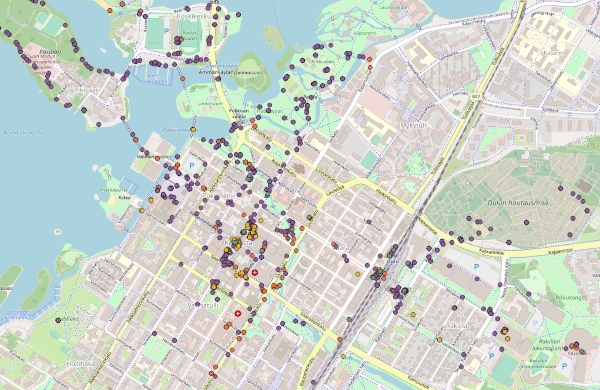

Photo Geo Scooper¶
Distributed under MIT license.
There’s no official release package of this script because it’s just the script and the PIP requirements file - you can check out the repository or just download the individual files off the GitHub web view.
Overview¶
Ever fancied seeing exactly where you have been strolling while taking photographs? Using real software?
This script will take all of the photographs in specified directory or folder, grab the photo metadata, and spit out a KML file containing coordinates of all photos you’ve taken.
You can then stick this KML file in any map visualisation tool you like (including Google Earth Pro and QGIS.)
Example¶

Above, you can see some of my recent photography adventures in Oulu, Finland. Dot colours represent different years. Rendered in QGIS. Base map © OpenStreetMap contributors.
Technology¶
This is a Python script, and it should work on a reasonably recent version of Python 3.
It supports all image files supported by Exiv2, which includes JPEG, various raw formats, DNG, and whatever the heck Google and Apple are trying to make fashionable this week.
The script supports caching (via the diskcache package). The cache will store the pertinent metadata so that the tags will only need to be re-read when the file has been changed. This will speed up the process a great deal when there’s a lot of files and you’re running the script repeatedly.
Usage¶
Nothing too complicated, I hope:
> geo_scooper --input INPUTDIR --output outputfile.kml --verbose
(or -i, -o, -v) Input directory and the output file are required, of course.
You may also specify the cache location via –cache or -c, e.g. –cache my_funny_scoop. If left unspecified, caching will not be used.